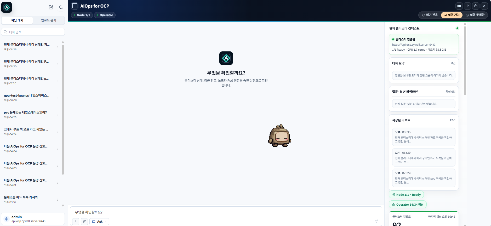
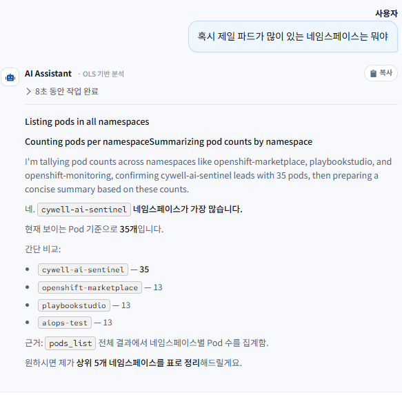
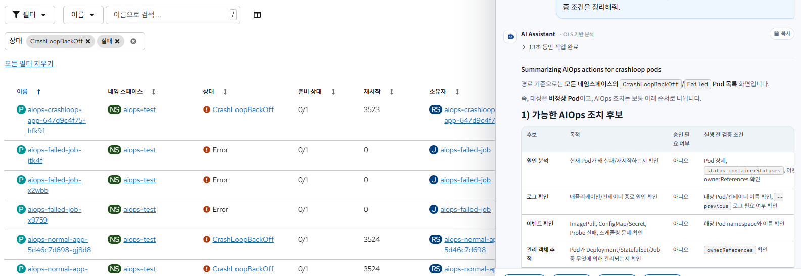
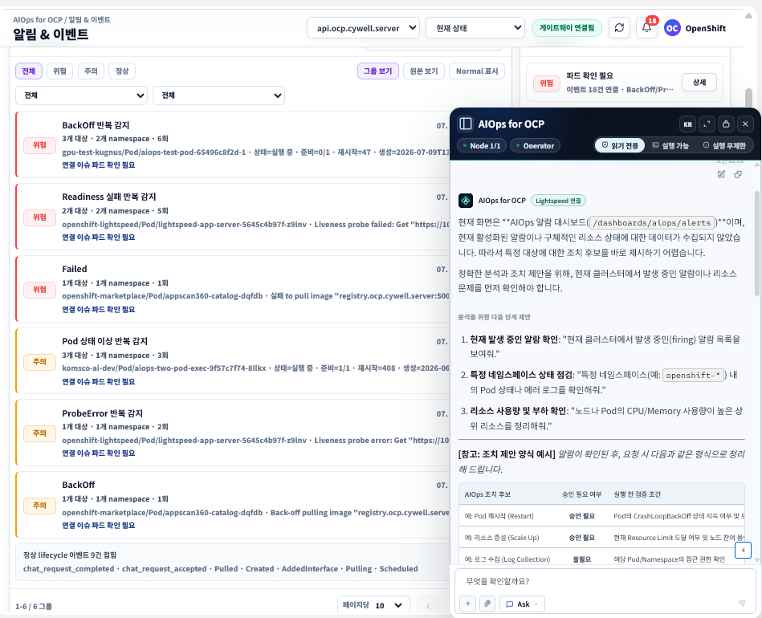
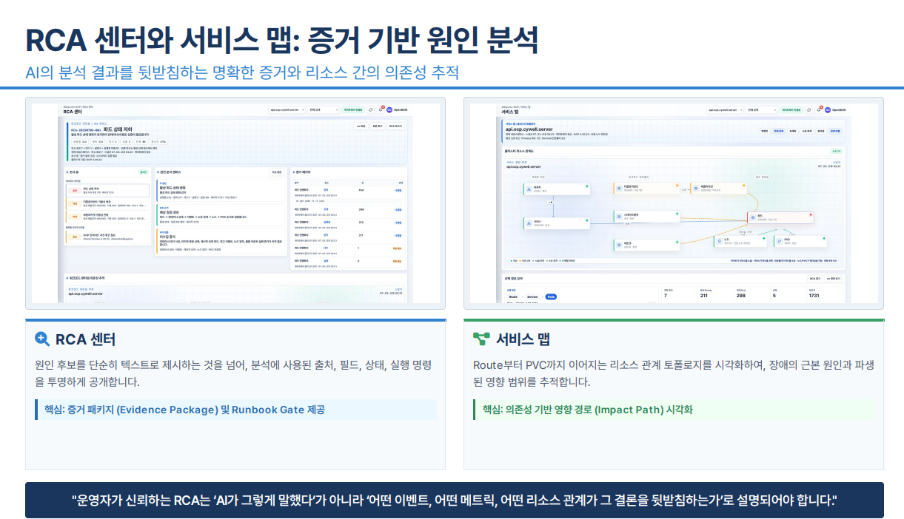
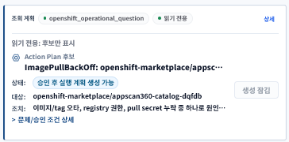
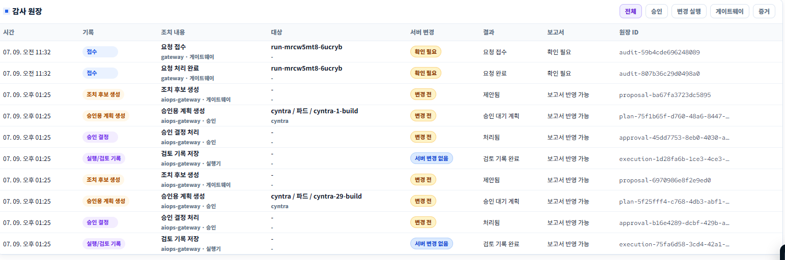
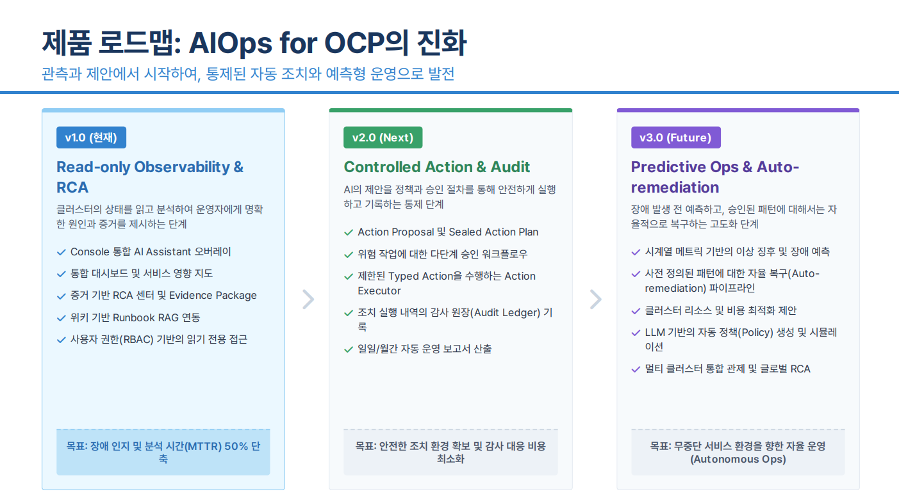

Slide 1 · Opening
OpenShift Native AIOps with Lightspeed
OpenShift Console, OpenShift Lightspeed, AI Gateway, AIOps 관리포털을 결합해 운영자가 장애를 빠르게 파악하고, 증거 기반으로 원인을 분석하며, 승인된 조치와 감사 기록까지 연결하는 통합 운영 경험을 제공합니다.
OpenShift Console Plugin
Lightspeed 연동
Evidence/RCA
Action/Audit
발표 기준선
- v1.0은 읽기 전용 관측과 RCA가 중심입니다.
- Action Plan은 위험 작업을 바로 실행하는 기능이 아니라 제안·승인·감사로 넘어가는 통제 지점입니다.
- 시연은 “완전 자동 복구”가 아니라 운영자가 신뢰할 수 있는 판단 흐름을 보여주는 데 집중합니다.

실습 화면: OpenShift Console 안에서 동작하는 AIOps 전역 패널과 관리 포털.
발표 메모: “새 포털을 따로 만든 것”이 아니라 OpenShift 안에서 운영자가 보고 있던 맥락을 유지한 채 AI 지원을 붙인다는 점을 먼저 말합니다.
Slide 2 · Problem
도입 배경: OpenShift 운영 환경의 과제
현재 운영 방식의 어려움
- Alert와 Event가 많아 핵심 이슈 선별이 늦어집니다.
- Pod, Node, Event, Metric을 각 콘솔에서 따로 확인해야 합니다.
- 원인 분석과 보고서 작성이 수동으로 반복됩니다.
- 자동화 조치를 도입하려면 권한, 승인, 감사가 먼저 정리되어야 합니다.
AIOps 적용 후 목표
- 이슈 큐와 서비스 맵으로 서비스 영향도가 큰 문제를 먼저 봅니다.
- Assistant가 현재 화면과 클러스터 조회 결과를 묶어 분석합니다.
- RCA 증거 패키지와 실행 기록으로 보고서 근거를 남깁니다.
- AI는 제안하고, 운영자가 승인하며, 실행기는 제한된 typed action만 수행합니다.
핵심 메시지: 운영 자동화의 출발점은 “AI가 알아서 고친다”가 아니라 “운영자가 더 빠르고 안전하게 판단한다”입니다.
Slide 3 · Concept
솔루션 개념: OpenShift + Lightspeed + AIOps
OpenShift
운영 대상 플랫폼, Console Plugin, RBAC, Operator/OLM 배포 기반을 제공합니다.
OpenShift Lightspeed
Pod, Node, Event, Metric, Resource 등 현재 클러스터 관측과 AI 응답 기반을 담당합니다.
AI Gateway
UserToken 경계, RBAC 검증, 민감정보 제거, 감사로그, RAG/Tool 연동을 담당합니다.
AIOps Portal
대시보드, RCA 센터, 서비스 맵, 실행 기록, 위키, 보고서, 설정을 단일 화면으로 통합합니다.
Action/Audit Layer
승인 기반 조치, 실행 기록, 감사 원장, 보고서 산출을 지원하는 통제 및 이력 관리 계층입니다.
발표 메모: Lightspeed를 대체하는 구조가 아니라, Lightspeed 앞뒤에 사내 보안·증거·감사 계층을 붙이는 구조입니다.
Slide 4 · Target Flow
목표 운영 경험: Detect → Ask → RCA → Approve → Report
01
Detect대시보드에서 Health Score, 이슈 큐, 주요 리소스 상태 확인02
Ask현재 화면 기준으로 Assistant에게 질문03
Collect EvidenceEvent, Metric, Log, RAG, 과거 증적 수집04
RCA원인 후보, 신뢰도, 서비스 영향 경로 정리05
Approve & Execute위험 작업은 Action Plan과 승인 후 제한 실행06
Audit & Report감사 원장, RCA 증거 패키지, 운영 브리핑 생성오늘 실습에서 다시 정리한 결론: v1 발표는 Detect, Ask, Evidence, RCA를 단단히 보여주고, Approve/Execute/Audit은 통제형 확장 흐름으로 설명하는 것이 안전합니다.
Slide 5 · Native Integration
OpenShift Native Integration: 3가지 제공 방식
| 제공 방식 | 의미 | 시연 포인트 |
|---|---|---|
| Operator/OLM Integration | CRD/CSV/Bundle, Subscription, InstallPlan 기반 설치와 업그레이드 | 회사 서버 배포 전에는 publish/install을 분리하고 승인 후 진행 |
| Application Launcher Integration | ConsoleLink로 OpenShift 우상단 앱 메뉴에 진입점 제공 | OpenShift 안에서 자연스럽게 AIOps로 이동 |
| Console Navigation Extension | 좌측 Navigation에 AIOps 대시보드와 RCA 센터 추가 | 별도 외부 포털이 아닌 Console-native UX |
발표 메모: 로컬 시연은 9000 console bridge 기준이지만, 배포 목표는 Dynamic Console Plugin과 OLM 기반입니다.
Slide 6 · Architecture
목표 아키텍처 및 데이터 흐름
Gateway가 맡는 일
- UserToken과 RBAC 경계를 확인합니다.
- 민감정보를 제거하고 조회 가능한 증거를 구조화합니다.
- Tool Plan과 Evidence Context를 만들어 Lightspeed에 전달합니다.
- 승인/실행/감사 기록은 서버 변경 여부와 함께 남깁니다.
중요한 정리
- Gateway 실조회만으로 빠르게 답할 수 있는 단순 집계가 있습니다.
- 하지만 RCA/상황 설명/화면 이해는 Lightspeed 최종 답변과 화면 context가 중요합니다.
- Fallback은 비상용이어야 하며, 프롬프트나 내부 용어를 사용자에게 뱉으면 실패입니다.
실습에서 발견한 gap: AIOps 커스텀 페이지의 카드/필터/top N 알림 목록을 Assistant 요청 context로 충분히 넘겨야 합니다.
Slide 7 · Lightspeed + Gateway
Lightspeed + AI Gateway 연동 흐름
이상적인 답변 흐름
- 사용자 질문과 현재 화면 context를 받습니다.
- Gateway가 필요한 조회 계획과 Evidence를 수집합니다.
- RCA Context JSON을 구성해 Lightspeed에 전달합니다.
- Lightspeed가 최종 답변을 streaming합니다.

실습 비교: 간단한 질문에도 “근거”와 “다음 단계”가 짧게 붙을 때 운영자에게 훨씬 친절합니다.
발표 메모: 단순 집계는 Gateway가 빠르게 만들 수 있지만, 운영자 경험은 “다음에 무엇을 할지”까지 제안해야 완성됩니다.
Slide 8 · AI Assistant
AI Assistant: 현재 화면을 이해하는 운영 Copilot

실습 기준: OCP 기본 리소스 화면은 route, kind, namespace, filter context가 잘 잡히면 답변 품질이 올라갑니다.
좋은 Assistant 답변의 기준
- 현재 화면이 무엇인지 먼저 짧게 확인합니다.
- 사용자가 보고 있는 필터나 리소스 범위를 인지합니다.
- 가능한 조치 후보를 표로 정리하되, 승인 필요 여부와 실행 전 검증 조건을 분리합니다.
- 마지막에는 자연스러운 다음 질문 또는 선택지를 제공합니다.
오늘 확정한 품질 기준: 사용자가 숫자만 입력해도 직전 답변의 후속 선택지로 이어질 수 있어야 합니다.
Slide 9 · Dashboard
운영 대시보드: 상황 인지와 이슈 진입점
대시보드의 역할
- Health Score와 이슈 큐로 지금 볼 문제를 고릅니다.
- 알림과 이벤트를 grouping해서 반복되는 신호를 줄입니다.
- 서비스 맵과 RCA 센터로 연결되는 진입점을 제공합니다.

실습 화면: 알림 & 이벤트 화면은 페이지명만이 아니라 보이는 카드 목록까지 Assistant context로 넘겨야 합니다.
발표 메모: “대시보드는 숫자판이 아니라 다음 행동으로 이동하는 운영 허브”라는 PDF 문장을 시연 화면과 연결합니다.
Slide 10 · RCA Center
RCA 센터와 서비스 맵: 증거 기반 원인 분석

발표 초안의 기준: RCA는 AI 답변이 아니라 어떤 증거가 결론을 뒷받침하는지 보여주는 화면입니다.
우리가 다시 이해한 역할
- RCA 센터는 “조치 기록 목록”이 아니라 문제 분석 캔버스입니다.
- 제목은 문제 분석, 원인 후보, 확인한 증거, 영향 범위 중심이어야 합니다.
- 서비스 맵은 Route → Service → Workload → Pod → Node/PVC 관계를 보여주는 영향 경로입니다.
- Assistant RCA는 이 분석 흐름을 챗봇으로 이어가는 보조 진입점입니다.
Slide 11 · Action & Audit
안전한 조치: Read-only 우선, 승인 기반 실행
v1 발표에서의 Action Plan 위치
- 기본 관측은 UserToken과 RBAC 범위 내 읽기 전용입니다.
- 위험 작업은 자연어를 바로 실행하지 않고 Action Proposal로 바꿉니다.
- Action Executor는 별도 권한과 typed action만 사용합니다.
- 읽기 전용에서도 계획 후보는 볼 수 있지만, 승인/실행은 제한됩니다.

실습 화면: 읽기 전용에서는 Action Plan 후보를 보여주되, 서버 변경은 막아야 합니다.
발표 메모: v2의 통제형 실행 기능을 일부 시연하더라도, v1 목표는 “제안과 판단 조건”을 안정적으로 보여주는 것입니다.
Slide 12 · Multi-vision / One-click Path
AIOps Lightspeed: 화면·이미지·자연어 기반 점검
시연 가능한 흐름
- 이미지나 현재 화면을 첨부해 상황을 설명하게 합니다.
- Gateway가 화면 context와 cluster evidence를 정리합니다.
- Lightspeed가 운영자 언어로 원인 후보와 다음 확인을 제시합니다.
- 필요하면 Action Plan 판단 조건으로 이어집니다.
오늘 발견한 주의점
- 이미지를 보냈는데 fallback이 이미지 없이 답하면 실패입니다.
- Fallback은 프롬프트를 드러내면 안 됩니다.
- AIOps 커스텀 페이지 context는 route만이 아니라 카드 목록과 선택 상세까지 전달해야 합니다.
발표 전 필수 점검: OLS 연결, 이미지 전달, AIOps 페이지 context 주입, fallback 문구를 각각 따로 확인합니다.
Slide 13 · Runbook/RAG/Audit/Report
Runbook/RAG, 감사, 보고서: 운영 지식의 폐쇄 루프

실습 화면: 감사 원장은 제안, 승인, 실행/검토 기록을 나중에 보고서와 재검증에 쓰기 위한 원장입니다.
정리된 용어
- Runbook/SOP: 조직이 승인한 운영 절차와 대응 문서입니다.
- RAG: 답변 전 내부 문서를 검색해 참고 context로 붙이는 방식입니다.
- Audit: 누가 무엇을 제안·승인·실행했는지 남기는 기록입니다.
- Report: RCA와 감사 기록을 사람이 제출할 수 있는 문서로 정리한 산출물입니다.
발표 메모: 피드백과 실행 기록이 곧바로 Runbook에 자동 반영되는 것은 아닙니다. 운영자가 선별해 지식 자산화하는 흐름으로 설명합니다.
Slide 14 · Roadmap
제품 로드맵: AIOps for OCP의 진화

v1.0 현재
Read-only Observability & RCA. 장애 인지와 증거 기반 원인 분석 시간을 줄이는 단계입니다.
v2.0 Next
Controlled Action & Audit. 승인 기반 조치와 감사 원장을 본격화하는 단계입니다.
v3.0 Future
Predictive Ops & Auto-remediation. 승인된 패턴에 대해 예측과 자율 복구로 발전합니다.
Slide 15 · Demo Script
시연 흐름 초안
| 순서 | 화면 | 보여줄 내용 | 성공 기준 |
|---|---|---|---|
| 1 | 대시보드 | Health Score, 이슈 큐, 서비스 영향 지도 | 현재 클러스터 상태와 우선 확인 대상을 설명할 수 있음 |
| 2 | 알림 & 이벤트 | BackOff, Readiness, Failed 같은 운영 신호 | 연결된 이슈 상세에서 리소스 상태 보기로 이어짐 |
| 3 | OCP Pod 목록 | CrashLoopBackOff/Failed 필터 화면에서 Assistant 질문 | 현재 화면 기준 조치 후보와 검증 조건 제시 |
| 4 | RCA 센터 | 문제 분석, 원인 후보, 확인한 증거, 영향 범위 | AI 결론이 아니라 증거 기반 설명임을 보여줌 |
| 5 | 실행 기록 | 제안/승인/검토/실행 기록과 원장 JSON 내보내기 | 서버 변경 여부와 보고서 반영 가능 여부를 구분 |
| 6 | 위키/보고서 | Runbook/RAG와 운영 보고서 산출 방향 | 자동 학습이 아니라 선별 반영 구조로 설명 |
시연 톤: “이미 다 자동으로 고칩니다”가 아니라 “운영자가 믿고 판단할 수 있게 증거와 다음 행동을 연결합니다.”
Slide 16 · Acceptance
발표 전 품질 게이트
| 항목 | Pass 기준 | 현재 주의점 |
|---|---|---|
| Lightspeed 연결 | OLS 최종 답변이 오고 fallback 프롬프트가 노출되지 않음 | FortiClient/회사망 연결 상태 확인 필요 |
| 화면 context | OCP 기본 화면과 AIOps 커스텀 화면 모두 현재 화면을 설명 | AIOps 카드 목록/top N context 주입 보강 필요 |
| Answer format | 요약, 영향 범위, 확인한 근거, 원인 후보, Action Plan, 추가 확인 | 과도한 목록/공용 URL/내부 용어 제거 필요 |
| Action Plan | 읽기 전용에서도 후보는 보이고, 승인/실행은 정책에 따라 차단 | 시연 범위는 v1 중심으로 설명 |
| Audit/Report | 검토/실행 기록과 서버 변경 여부가 사람이 이해 가능 | 용어는 “원장 JSON 내보내기”처럼 운영자 언어로 조정 |
마무리 멘트: “AIOps for OCP는 장애를 대신 겪어주는 자동화가 아니라, 운영자가 더 빨리 이해하고 더 안전하게 승인하도록 돕는 통합 운영 루프입니다.”